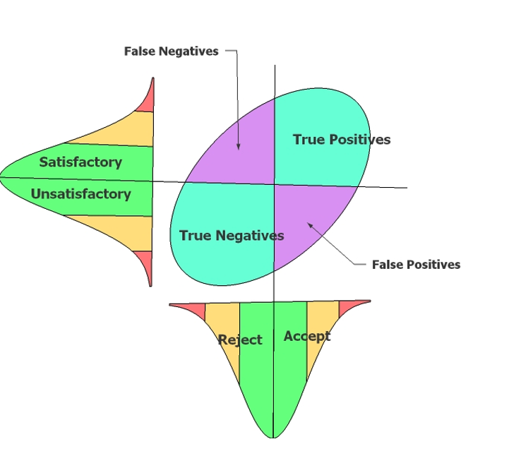
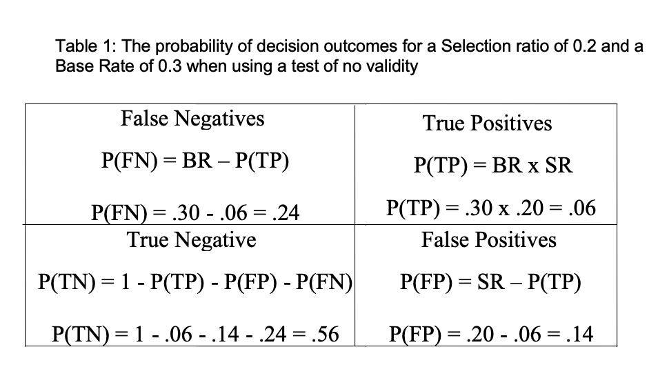
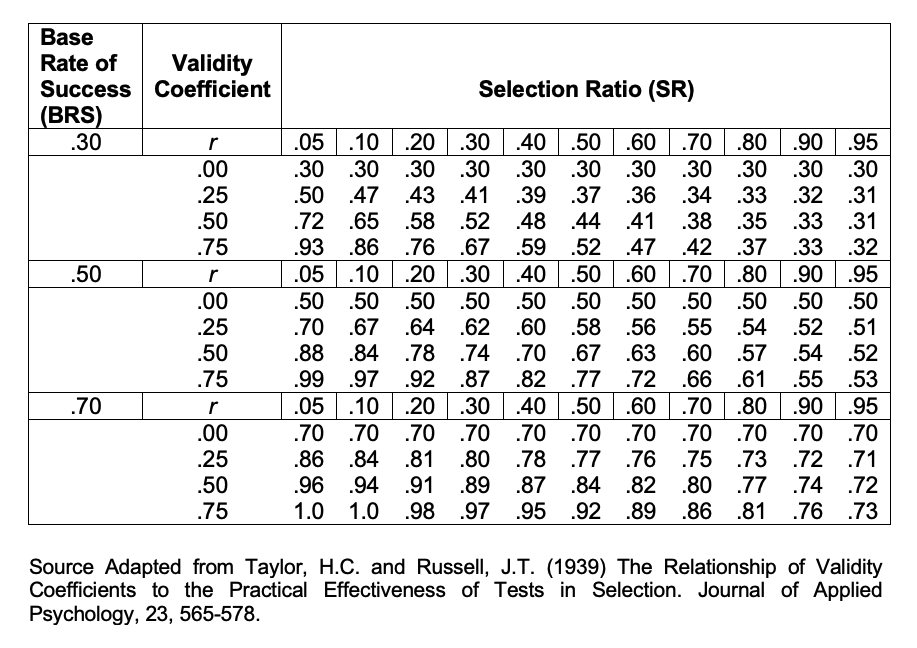
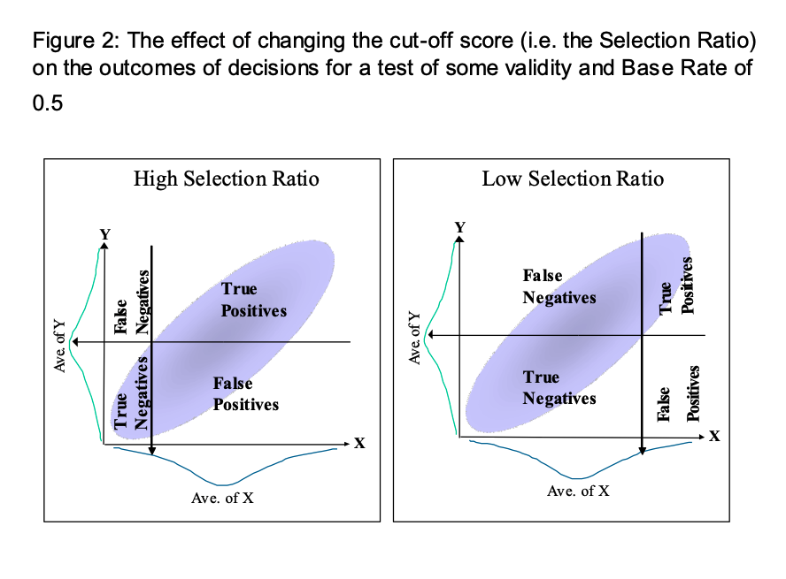
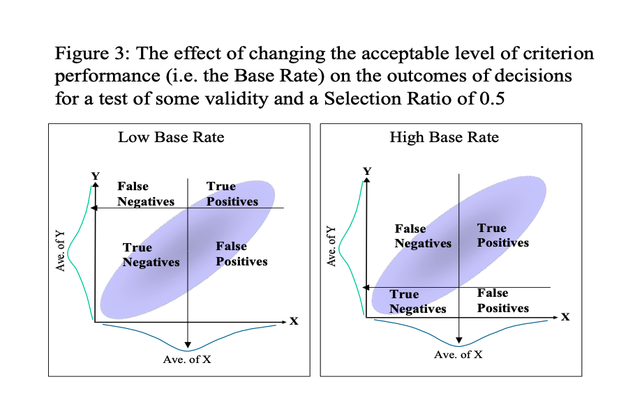
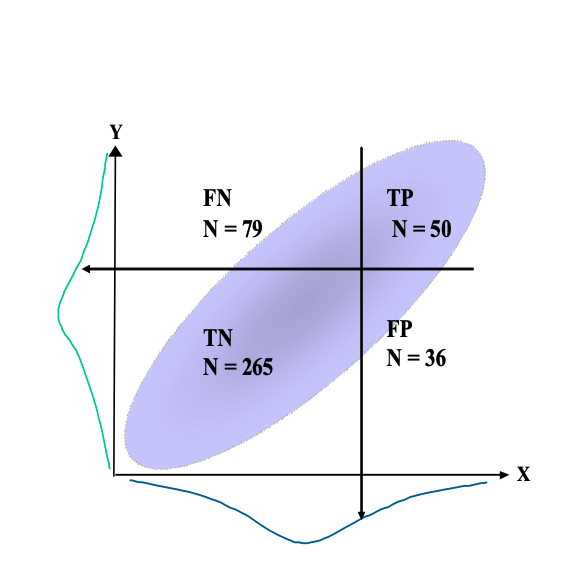
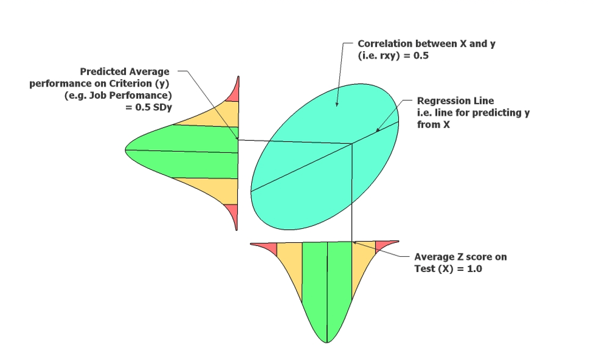

Chapter 6 Tests, Decisions and Outcomes
When evaluating the usefulness of a selection strategy, one possible approach is to categorize the outcomes of this strategy, or decision process, simply in terms of a two-way split. The possible outcomes from this categorization are illustrated in figure 1 below.

In the above figure, a cut-off score on test performance has been set at the average of the test performance for the applicant pool. In this case all those with above average performance on the test would be selected. Also in this figure, all those in the applicant pool who would score above average on criterion performance (before the application of the test) have been classified as satisfactory.

This 2x2 split gives four possible outcomes for any decision. False Negatives (FN) and False Positives (FP) are incorrect decisions. True Positives (TP) and True Negatives (TN) are correct decisions.
6.1 Test Validity, Selection Ratio, Base Rate and the Quality of Decisions.
From the previous figure, it is clear that any valid test has the potential to increase the proportion of correct decisions (i.e. TP + TN / Total) compared to a less valid test or random selection.
However, the actual contribution of a test to the quality of decisions is affected not just by the validity of the test, but also by the cut-off score used and the level of criterion performance that is considered to be satisfactory. In the previous example, these were both set at the average level of performance for both test and criterion within the applicant pool. In fact, these two factors can each be set at any level.
Setting a high cut-off score on the test will ensure that proportion selected from the applicant pool will be low. The proportion selected from the applicant pool is termed the Selection Ratio, and is a direct reflection of the cut-off score if the test alone is used in the decision process. In the example, the Selection Ratio is set at 0.5 (i.e. 50% of the applicant pool will be selected).
Setting a high level of performance on the criterion will ensure that the proportion of applicants who would be satisfactory will be low. This proportion of potentially satisfactory applicants is termed the Base Rate, and it is a direct reflection of the level of acceptable criterion performance. In the previous figure, the Base Rate is set at 0.5 (i.e. 50% of the applicants are considered to be potential successes)
6.2 Calculating the Probabilities of Decision Outcomes
When using a test or selection process of no validity, the probability of each decision outcome is a function of the selection ratio and base rate. If selection is random then the probability of making a true positive decision [P(TP)] may be calculated as Base Rate (BR) x Selection Ratio (SR). The probability of the other outcomes can then be calculated by subtraction. For example, table 1 overleaf illustrates the probabilities of each outcome for a particular selection ratio (i.e. 0.2) and base rate (i.e. 0.3) when there is no validity.

When a test of some validity is used, then the probability of making a True Positive decision is increased. This may be calculated as:
$ \large P(TP) = BR \times SR + r_{xy} \sqrt{(BR(1-BR) \times SR(1-SR))}$Again, the probability of the other outcomes can be calculated by subtraction. These probabilities can be compared with random selection and with tests of differing validities The above equation can be used to calculate the probabilities of decision outcomes from a knowledge of validity, base rate and selection ratio. An alternative approach to the evaluation of outcomes is to use the tables constructed by Taylor-Russell (1939).
These tables show the proportions (or probabilities) of satisfactory employees [TP / (TP + FP)] expected through the use of a test of given validity, for a given base rate and given selection ratio.
The proportion of satisfactory employees [TP / (TP + FP)] is known as the Validity Rate. The table below shows an extract from the Taylor-Russell tables illustrating the relationship between Base Rate, Validity Coefficient, Selection Ratio and Validity Rate.
Previously the base rate was defined as the proportion of potentially satisfactory applicants in the applicant pool. The validity rate has just been defined as the proportion of satisfactory employees from those selected. Thus the Incremental Validity from a test is: Validity Rate - Base Rate. Using Taylor-Russell tables:
What is the Validity Rate for a test of validity 0.7, with a base rate of 0.6 (i.e. 60%) and a selection ratio of 0.2 (i.e.20%)?
6.2.1 What is the Incremental validity?
An examination of the Taylor-Russell tables reveals that the proportions of satisfactory employees increase as test validity increases, particularly when the selection ratio is low and the base rate is around 50%. The impact of changing the selection ratio and base rate, when using a test with at least some validity, is illustrated in figure 2 and 3 on the next page.


It is possible to calculate validity rates from an actual scattergram of the relationship between test scores and criterion scores. However, for an accurate picture, the sample size would need to be large. Figure 4 below, gives an example, showing the number of people within each outcome category for a quite valid test. Here the criterion-related validity is about 0.5.

6.3 Calculating the Cash Benefits of a Selection Strategy
An organisation may be concerned with the return from increasing the accuracy of the selection process. A formula for calculating the expected criterion performance for a selected group of people is shown below:
$ Av_{.ý£} = rxy (Av.Z) £SDy$
Where: - Av.ý £ = Average predicted criterion performance in pounds - r_{xy} = criterion-related validity for test or procedure - Av.Z = average test performance for selected group in z scores - £SDy = standard deviation of criterion performance (in pounds)
• For a test with validity (rxy) 0.5 the slope of the regression line will be an average 0.5 increase in the Standard Deviation of Y (SDy) per unit increase in the Standard Deviation of X.
• For this test if those hired score on average one standard deviation above the mean on the test (i.e. Av.Z = 1), their predicted criterion score will be 0.5 of a standard deviation above the mean on the criterion

Thus if we can calculate the pound value of the SD of Job performance we can then calculate how much the test will benefit the organisation compared to the current average worker.
Criterion performance itself may be measured in many ways, but one useful measure is the pound value of output. Research (e.g. Schmidt et al 1986) indicates that the standard deviation of the pound value of output is 40% of salary. Thus, if the average salary for a job is £25,000 per year then the standard deviation is £10,000. If we assume that job performance is normally distributed this would mean that workers who perform at one standard deviation above the mean (i.e. who lie at the 84th percentile) have an output £10,000 higher than the average worker.
Thus if we select people who score on average one standard deviation above the mean on a selection test (Av.Z = 1), with validity (rxy) of 0.5, for a job with an average salary of £25,000 (i.e SDy = £10,000). Then the predicted criterion performance in pounds per year per person is £5,000 above the mean (i.e. ý /year/person/ = rxy Av.Z £SDy = 0.5 x 1 x £10,000 = £5000).
An Illustration of the Potential Cash Benefits from Valid Selection
A company advertises nationally for about 20 management trainees per year. On average 800 applicants are given a selection test. Therefore the selection ratio is about .025. That is the top scoring 2.5% are employed. These employees will have scored about 2 standard deviations above the mean on the selection test. This selection test has a criterion-related validity of 0.65. If the average wage for management trainees in this company is £20,000 p.a., then compared to using a test of no validity this test will profit the company by how much money per person per year?
In 10 years of selection for the above scenario (and assuming that each employee is a trainee for just one year) what will be the total profit from the trainees for this test?
The above figure is a something of an overestimation since one would need to deduct the costs of the testing procedure.
6.4 Indicative Reading
Cook, M. (2009). Personnel Selection: Adding Value through People. 5th ed. Chichester: John Wiley & Sons Ltd.
Schmidt, F.L. and Hunter, J.E. (1998). The Validity and Utility of Selection Methods in Personnel Psychology: Practical and Theoretical Implications of 85 Years of Research Findings. Psychological Bulletin, 2, 262-274.
Sturman, M.C. (2003). Utility Analysis : A Tool for Quantifying the Value of Hospitality Human Resource Interventions. Cornell Hotel and Restaurant Administration Quarterly, 44, 106-116